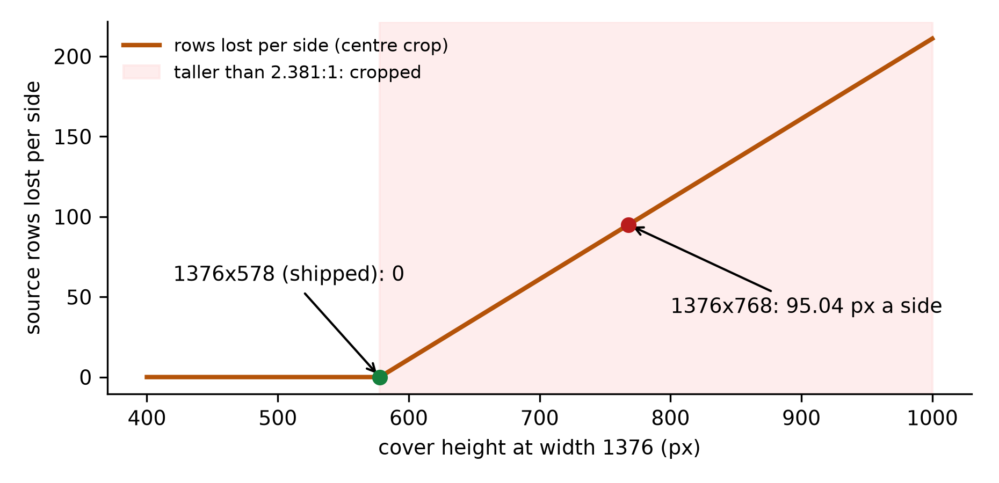
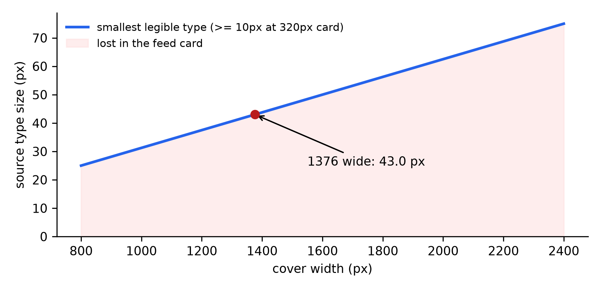
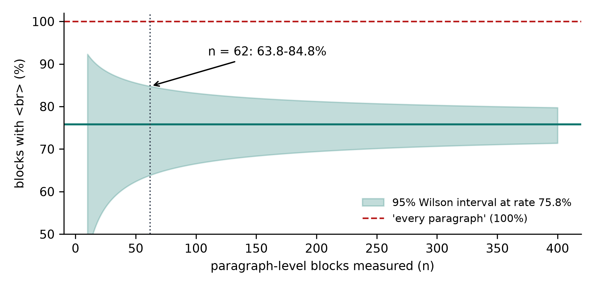

eq_verified_numbers.json,
written by verify_math.py.The article has no equations. Its checkable content is geometry (the dev.to cover crop and the feed card), one measured proportion (47 of 62) and a set of counts and sizes in the archived evidence and the claim ledger. Each is written as a formula where one exists and recomputed from the files on disk.
definition constants taken from a destination or the kit's source bound values derived from them estimator measured counts and rates metric sentence-level counts and ledger arithmetic
gravity=auto.Intuition. dev.to does not re-host the cover. It serves it through an image proxy with a fixed box,
width=1000,height=420,fit=cover. fit=cover scales the image until it fills the box and cuts whatever
overhangs. A cover taller than the box's shape loses rows; one wider loses columns.
Simulation. Pillow ImageOps.fit(1376x768 row-index image -> 1000x420, centering 0.5) with NEAREST resampling; deterministic, no sampling. Rows kept: 95 to 672, so 95 lost at the top and 95 at the bottom.

| claim | statement / source | paper | computed | verdict |
|---|---|---|---|---|
| D1_ definition | dev.to proxies the cover at width/height = 2.381:1 devto-publishing-kit.md l.53; evidence/devto-cover-crop.txt proxy URL | 2.381 | proxy_w 1000 proxy_h 420 ratio 2.38095 | VERIFIED 1000/420 = 2.380952, prints as 2.381. |
| B1_ bound | a 1376-wide cover keeps 1376/2.381 = 577.9 -> 578 rows evidence/devto-cover-crop.txt ARITH line 2 | 578 | kept_rows 577.92 | VERIFIED 1376 * 420 / 1000 = 577.92, rounds to 578. |
| B2_ bound | a 1376x768 cover loses 95px off the top and 95px off the bottom devto-publishing-kit.md l.53; evidence ARITH line 3 | lost_top_px 95 lost_bottom_px 95 | lost_total_px 190.08 lost_top_px 95.04 lost_bottom_px 95.04 | VERIFIED 768 - 577.92 = 190.08 rows, 95.04 a side under a centre crop. Pillow's fit=cover crop on a row-encoded image agrees within 1 row. The proxy URL says gravity=auto, so the 95/95 split assumes centring; the 190-row total does not depend on it. |
| B3_ bound | the article's own dev.to covers are 1376x578 (ratio 2.381:1), so nothing is cropped evidence/devto-cover-crop.txt last MEASURED line; front matter cover_image | w 1376 h 578 | sizes cover.77acc7c4.jpg [1376, 578] cover.ae4d639e.jpg [1376, 578] rows_lost cover.77acc7c4.jpg 0.08 cover.ae4d639e.jpg 0.08 ratio 2.38062 | VERIFIED Both cover files on disk measure 1376x578. 1376/578 = 2.3806, wider than 2.38095 by 0.0003, so a fit=cover crop removes 0.08 source columns and 0 rows. |
Intuition. A cover is first seen shrunk to a feed card. Everything on it scales by CARD_W / W, so a label must
start large enough to land above the legibility threshold after the shrink. The kit's make-cover.py sets
CARD_W = 320 and LEGIBLE_PX = 10:
At width 1376 the card scale is 0.23256, so anything under 43.0 px on the full-size cover is unreadable in the feed.

| claim | statement / source | paper | computed | verdict |
|---|---|---|---|---|
| D2_ definition | make-cover.py reports which type sizes survive a 320px feed card devto-publishing-kit.md l.36 | 320 | CARD_W 320 LEGIBLE_PX 10 min_legible_source_px_at_1376 43 card_scale_1376 0.23256 | VERIFIED CARD_W = 320 in ~/publishing-kit make-cover.py at dec86c0 2026-11-16 (current HEAD, not the 2026-08-31 version). With LEGIBLE_PX = 10, type on a 1376-wide cover must be >= 43.0 source px to survive the card. |
| D3_ definition | 320px is the size a dev.to cover is seen at in the feed devto-publishing-kit.md l.36; CLAIMS.md LOG 2026-08-31 | 320 | – | NOT CHECKABLE No archived measurement of dev.to's feed card. CLAIMS.md files it as LOG, and the only source is the kit's own constant, which records the author's choice, not dev.to's layout. |
Intuition. dev.to renders single newlines as <br>. The evidence counts paragraph-level blocks
in one published article's HTML and how many contain a break. Treated as a proportion of that article's blocks, the
Wilson interval is:
with n = 62, k = 47, z = 1.96. scipy and the plugin's MCP
verify_wilson_ci agree. Simulation. parametric bootstrap, 100000 draws of Binomial(62, 47/62), seed 42: mean
75.799%, standard error 5.441 points, 95% band
[64.52, 85.48]%.

| claim | statement / source | paper | computed | verdict |
|---|---|---|---|---|
| E1_ estimator | 47 of 62 paragraph-level blocks in a published dev.to article carry <br> devto-publishing-kit.md l.161 (table); evidence/devto-hardwrap.txt | k 47 n 62 | k 47 n 62 p_plus_li [58, 4] rate_pct 75.81 wilson95_pct [63.85, 84.75] total_br 88 | VERIFIED 58 + 4 = 62 = the stated total; 47 <= 88 total <br>, consistent with blocks that wrap more than once. MCP verify_wilson_ci gives 63.85-84.75%, same as scipy here. One article was measured, so the interval describes that article's blocks, not dev.to in general. |
| E2_ estimator | a source wrapped at 95 columns arrives with a stray break in every paragraph devto-publishing-kit.md l.53 | share_of_paragraphs 1 | share_of_paragraphs 0.7581 blocks_without_br 15 source_multiline_paragraphs 43 source_lines_ending_two_spaces 0 | MISMATCH The archived measurement has 15 of 62 blocks with no <br>. The narrower reading, 'every wrapped paragraph', fits (43 multi-line source paragraphs, 0 explicit breaks), but the evidence does not pair blocks with source paragraphs, so that reading is not shown either. |
| M1_ metric | the repo copy stays readable at 95 columns devto-publishing-kit.md l.128 (also l.53) | 95 | prose_lines_over_95 20 max_prose_line 126 examples [[10, 97], [11, 96], [17, 96], [34, 96], [35, 97], [36, 96]] | NOT CHECKABLE The sentence describes the kit's behaviour, not a width limit on this file. For reference, this file's own source has 20 prose lines longer than 95 characters, so it is wrapped near 95, not at it. |
Intuition. The re-hosted copies of the refreshed covers on Substack and Builder Center are not archived, so their pixel differences cannot be recomputed directly. Mean absolute difference is a distance, so the triangle inequality ties the unarchived copy to the two local files:
If a copy is 0.0 from the new cover, new-vs-old must equal its own distance to the old cover; if it is 0.56 away, the two may differ by at most 0.56.
| claim | statement / source | paper | computed | verdict |
|---|---|---|---|---|
| E3_ estimator | Medium images pasted as data URIs: 0 of 4 survived; from real URLs, 4 of 4 devto-publishing-kit.md l.162 (table); CLAIMS.md LOG 2026-08-30 | data_uri_survived [0, 4] hosted_survived [4, 4] | this_article_embed_data_uri_imgs 2 this_article_hosted_url_imgs 2 | NOT CHECKABLE No archived artifact: CLAIMS.md lists it as LOG from 2026-08-30. This article's own Medium builds carry 2 data-URI and 2 URL images, so the 4 images belong to an earlier article. |
| E4_ estimator | re-hosted Substack cover: mean abs pixel diff 0.0 vs the new cover, 18.71 vs the old one evidence/cover-refresh.txt | vs_new 0 vs_old 18.71 | new_vs_old_local_RGB 18.775 new_vs_old_local_L 18.546 | NOT CHECKABLE The re-hosted copy is not archived. If it is 0.0 from the new cover, the triangle inequality forces new-vs-old = 18.71 (within 0.01 for rounding). The local files give 18.775 (RGB) and 18.546 (greyscale), 0.065 off, so the evidence used a method other than these two (it does not name one). |
| E5_ estimator | Builder Center hero: mean abs pixel diff 0.56 vs the new cover, 14.66 vs the old one evidence/cover-refresh.txt | vs_new 0.56 vs_old 14.66 | new_vs_old_local_RGB 14.671 new_vs_old_local_L 14.476 | VERIFIED Triangle inequality: |d(new, old) - 14.66| <= d(hero, new) = 0.56. Local RGB d(new, old) = 14.671, 0.011 from 14.66, inside the bound. The hero itself is not archived. |
Sentence-level counts are recounted from the article's markdown and its archived Medium HTML; ledger figures are re-added or re-divided from the evidence files.
| claim | statement / source | paper | computed | verdict |
|---|---|---|---|---|
| M2_ metric | this article's own TL;DR posted as five separate lines devto-publishing-kit.md l.171 | 5 | tldr_source_lines 5 | VERIFIED The TL;DR block quote is 5 source lines; an unwrap that skips block quotes posts each as its own line. |
| M3_ metric | the run found five faults in the kit itself devto-publishing-kit.md l.167 | 5 | faults_listed 5 | VERIFIED Splitting the list after the colon on '; ' gives the count ('TL;DR' contains a bare ';'). |
| M4_ metric | Substack draft subtitle is the front matter description, 241 chars evidence/substack-paste.txt draft_subtitle | 241 | front_matter_description_chars 241 | VERIFIED len() of the description string in the article's front matter. |
| M5_ metric | hosted HTML source: 4 <pre> blocks, lines 2/2/1/4, chars 87/124/65/225; 2 images; 7 <h4>; 4 link targets, 6 anchors evidence/substack-paste.txt '## Source' | pre_lines [2, 2, 1, 4] pre_chars [87, 124, 65, 225] img 2 h4 7 link_targets 4 anchors 6 | pre_lines [2, 2, 5] pre_chars [87, 124, 291] img 2 h4 7 link_targets 4 anchors 6 | MISMATCH Parsed the archived medium/devto-publishing-kit-hosted.html with html.parser. It holds 3 <pre> blocks, not 4: its third block is the evidence's blocks 3 and 4 joined (65 + 1 newline + 225 = 291 chars, 1 + 4 = 5 lines), so the archived HTML is a different build from the one pasted into Substack. Images, <h4> and links match. |
| M6_ metric | 40 articles listed: gde 24, aws-builders 13, none 3 CLAIMS.md MEASURED; evidence/devto-orgs.txt | total 40 gde 24 aws-builders 13 none 3 | total 40 sum_of_parts 40 gde 24 aws-builders 13 None 3 | VERIFIED 24 + 13 + 3 summed in code. |
| M7_ metric | 23 of 23 opening fences carry a language label CLAIMS.md MEASURED; evidence/devto-roundtrip.txt | labelled 23 openers 23 | labelled_sum 23 openers 23 bare 0 | VERIFIED 6 + 14 + 1 + 1 + 1 summed in code, equals the opener count with 0 bare. |
| M8_ metric | article sizes in KB: 23.1 / 23.3 / 22.5 evidence/builder-payload.txt | builder-publishing-kit.md 23.1 devto-publishing-kit-aws.md 23.3 devto-publishing-kit-gde.md 22.5 | builder-publishing-kit.md chars 23644 chars_over_1024 23.09 printed_KB 23.1 devto-publishing-kit-aws.md chars 23827 chars_over_1024 23.269 printed_KB 23.3 devto-publishing-kit-gde.md chars 23044 chars_over_1024 22.504 printed_KB 22.5 | VERIFIED Each printed KB equals chars/1024 to one decimal. The KB is of characters; with em dashes the byte size is larger. |
| M9_ metric | CLAIMS.md MEASURED: Builder payload 22,542 chars / 22.0 KB, 521 lines before unwrap, 408 after CLAIMS.md l.35 | chars 22542 KB 22 before 521 after 408 | chars 23234 KB 22.689 before 531 after 411 | MISMATCH The archived evidence (re-captured 2026-08-31T15:54) says 23234 chars, 531 / 411 lines. The ledger row was not updated; 22542/1024 = 22.01 is internally consistent but has no archived artifact. |
| M10_ metric | CLAIMS.md traps table: Builder payload 23,214 chars / 22.7 KB, 531 lines before unwrap, 411 after CLAIMS.md l.134 | chars 23214 KB 22.7 before 531 after 411 | chars 23234 KB 22.689 before 531 after 411 | MISMATCH Lines and KB match (23234/1024 = 22.69); the character count is 23234 in the evidence against 23,214 in the ledger, a 20-character gap. |
| M11_ metric | covers: 1376x768 105 KB / 1376x768 104 KB / 1200x675 15 KB CLAIMS.md l.30 | KB [105, 104, 15] | per_cover devto-cover-aws.44aee846.jpg bytes 106890 KiB 104.38 kB 106.89 devto-cover-gde.0d021e90.jpg bytes 106731 KiB 104.23 kB 106.73 builder-cover.2b7f0305.jpg bytes 15470 KiB 15.11 kB 15.47 claim_reachable [false, true, true] | MISMATCH 106890 bytes is 104.38 KiB or 106.89 kB; neither rounds to 105. The other two rows match (104.23 KiB, 15.11 KiB). |
| M12_ metric | skill footprint at 0.18.0: total 4,580 lines evidence/skill-footprint.txt | 4580 | SKILL_md 649 references 809 templates 24 scripts 3098 sum 4580 counts [6, 2, 14] | VERIFIED SKILL.md + 6 references + 2 templates + 14 scripts summed in code. |
| M13_ metric | CLAIMS.md: SKILL.md 446 lines; references 226/148/86/66; six scripts 1,389; 2,370 total (at 0.2.0) CLAIMS.md l.22 | total 2370 | sum_of_listed_parts 2361 gap_to_total 9 archived_evidence_version 0.18.0 archived_total 4580 | NOT CHECKABLE The listed parts sum to 2361, 9 short of 2,370 (the gap could be the description or a file not listed). The archived skill-footprint.txt was overwritten at 0.18.0, so the 0.2.0 figures and the ~187 / ~8k token costs have no artifact. |
| M14_ metric | install pinned at commit f7eaac2, equal to HEAD CLAIMS.md l.24 | commit f7eaac2 equals_HEAD True | pinned 920fe6c HEAD 920fe6c equals_HEAD True inodes_differ True | MISMATCH The re-captured evidence (0.6.0) shows 920fe6c for both, so pinned == HEAD and the inodes differ (a snapshot) hold; the commit id in the ledger does not appear in the archived file. |
| M15_ metric | LinkedIn hook 80 chars CLAIMS.md MEASURED; evidence/linkedin-run.txt | 80 | hook_line_chars 80 tool_reported 80 | VERIFIED len() of the first line above the fold: 'Getting 22 KB of Markdown Into AWS Builder Center Without Touching the Clipboard'. |